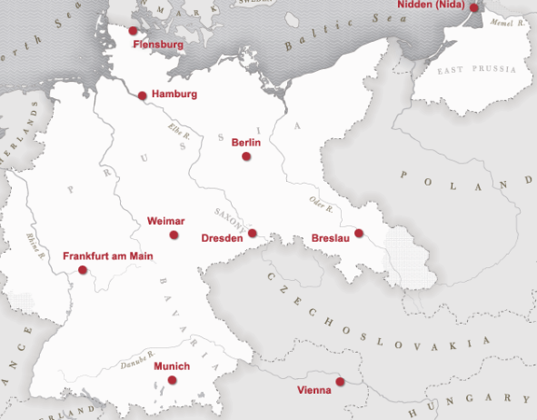

At the end of the First World War in 1918 (then known as the Great War), the old German Empire fell in a revolution and a republic was declared shortly after, promptly signing a ceasefire with the Western Entente, ending the Great War. Its constitution was written in the town of Weimar due to the capital Berlin being deemed too unstable and dangerous, which led to its later opponents to coin the name "Weimar Republic".
Throughout its existence, the republic struggled to survive, and the first and largest headache came with the Treaty of Versailles signed in January 1919. In this treaty, Germany was crushed underneath reparations that it didn't have, had to disarm almost completely and lose a huge amount of territory. Within two years of its foundation, the new country already found itself under siege from both sides of the poltical spectrum. This came to a head during the hyperinflation crisis of 1923, where France invaded the Ruhr. From 1923 onwards, Germany embraced a policy of reconciliation towards the former Western Allies and it seemed to everyone that it was finally becoming a proper part of the global community. Then the Great Depression hit in 1929, and everything was downhill from there. Finally, in 1933, the leaders of Germany gambled and put the NSDAP in power, hoping to control their leader to regain a majority in the Reichstag parliament to pass laws and movements. Unfortunately, they were wrong, and the NSDAP quickly seized power, ending the Republic, declaring a New Order, and starting the road to a Second World War.
In the aftermath of the 1923 incident, Germany signed numerous reconciliation treaties with the West with the help of Foreign Minister Gustav Stresmann. As the 1920s rolled on, Germany got caught up in what was later known as the roaring 20s. Due to having barely any paramilitary as a result of Versailles, the country was in a unique situation where there was such a thing as too much freedom. On one hand there were movements that far exceeded the social progress at that time, like homosexual clinics and silent films. On the other, both underground movements still festered deep within society, simply moving under to fight another day. This lasted all the way until the NSDAP took power in 1933.
Hans von Seeckt, the man behind the majority of Germany's 1939 army
The Treaty of Versailles, signed in January 1919, was designed to cripple Germany's military capabilities by disallowing troops numbers greater than 100 thousand, with sailors being restricted to 15 thousand. It was also prohibited from having tanks, an airforce and had to demilitarise the Rhineland. From the very beginning, even before its fascism stint, Germany tried to circumvent these limitations by exploiting as many loopholes as possible, calling secret armies police forces, technically not restricted by the treaty, and disguising planes and tanks as "crop dusters" and "tractors", or things ordinarily meant solely for civilian use. Germany also signed multiple friendship treaties with the Soviets, being the only other major outcasts from European affairs at the time. This allowed Germany to train up tanks and planes without having to worry about Allied inspectors figuring out what was going on. Unlike the Allies, Germany refined their doctrines to the best they could and looked at their defeat from every possible angle to win the next war if it came. When the Second World War started, they had plenty of officers capable enough that they defeated nearly all opponents tactically.